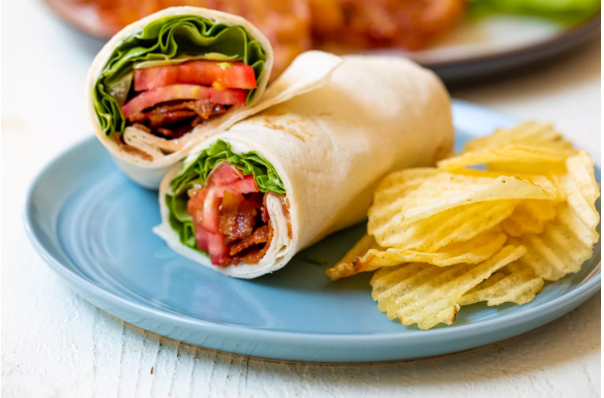

BLT Wraps Recipes

Description
The trick to making a good BLT wrap is to make super crispy bacon, stack the ingredients in the right order, and use a good sauce. We will do all of those things
in this version, and you’ll be left with a lunchtime winner!
Ingredients:
- 1 pound bacon
- 1 head butter lettuce, leaves roughly chopped
- 3 small ripe tomatoes, sliced
- 6 large burrito-size tortilla wraps
- 1/2 cup mayo
- 2 tablespoons thinly sliced fresh chives
- 1/2 teaspoon garlic powder
Steps:
- Preheat oven to 375˚F.
- Cook the bacon
- Make the chive mayo:
- Assemble the wraps:
- Packing the wrap for lunch: